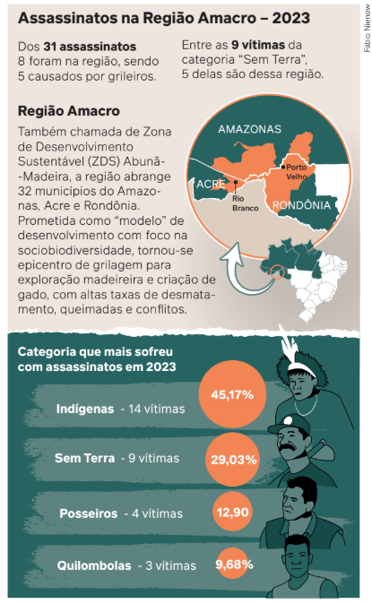

1.
Indique no caderno qual das alternativas abaixo descreve corretamente o conceito de "função social da terra", conforme previsto na Constituição de 1988.
a) A terra deve ser utilizada apenas para fins de agricultura familiar.
b) A terra deve ser utilizada de forma a gerar o máximo lucro possível para o proprietário.
c) A terra deve ser utilizada de forma racional e adequada, respeitando o meio ambiente e as leis trabalhistas e promovendo o bem-estar dos proprietários e trabalhadores.
d) A terra deve ser dividida igualmente entre todos os cidadãos brasileiros.
a) A terra deve ser utilizada apenas para fins de agricultura familiar.
b) A terra deve ser utilizada de forma a gerar o máximo lucro possível para o proprietário.
c) A terra deve ser utilizada de forma racional e adequada, respeitando o meio ambiente e as leis trabalhistas e promovendo o bem-estar dos proprietários e trabalhadores.
d) A terra deve ser dividida igualmente entre todos os cidadãos brasileiros.
2.
Analise os dados a seguir sobre violência no campo no Brasil em 2023.
a) Considerando os dados do relatório produzido pela Comissão Pastoral da Terra, quem foram as principais vítimas dos conflitos violentos no campo em 2023?
b) Por que você acredita que essas pessoas foram assassinadas? Quem seriam as pessoas envolvidas nesses assassinatos, considerando as informações sobre a região onde a maioria deles aconteceu?

Disponível em: http://www.arionaurocartuns.com.br/2016/
Acesso em: 20 out. 2020.
a) Considerando os dados do relatório produzido pela Comissão Pastoral da Terra, quem foram as principais vítimas dos conflitos violentos no campo em 2023?
b) Por que você acredita que essas pessoas foram assassinadas? Quem seriam as pessoas envolvidas nesses assassinatos, considerando as informações sobre a região onde a maioria deles aconteceu?
3.
A concentração de terras no Brasil é um problema histórico que tem profundas implicações sociais e econômicas. Explique como essa concentração se originou e quais são seus principais impactos na sociedade brasileira atual.
4.
Leia o trecho da reportagem a seguir.
Considerando as informações da reportagem e os dados apresentados na questão anterior, elabore uma redação sobre os conflitos no campo e a questão ambiental no Brasil. Procure articular os dados e as informações com o que você estudou no capítulo. Não se esqueça de refletir sobre formas de combater o problema.
Brasil é o segundo país que mais mata ambientalistas
Em 2023, pelo menos 196 ativistas foram assassinadas em todo o globo por defenderem o direito à terra e ao meio ambiente saudável. A Colômbia foi o país que registrou mais violência do tipo, com 79 mortes; e o Brasil aparece na sequência, com 25. O levantamento divulgado nesta terça-feira (10/09) é da ONG Global Witness, sediada no Reino Unido.PONTES, N. Brasil é o segundo país que mais mata ambientalistas. DW, [s. l.], 10 set. 2024. Disponível em: https://www.dw.com/pt-br/brasil-%C3%A9-o-segundo-pa%C3%ADs-do-mundo-que-mais-mata-ambientalistas/a-70175944. Acesso em: 10 set. 2024.
Considerando as informações da reportagem e os dados apresentados na questão anterior, elabore uma redação sobre os conflitos no campo e a questão ambiental no Brasil. Procure articular os dados e as informações com o que você estudou no capítulo. Não se esqueça de refletir sobre formas de combater o problema.
5.
O MST desempenha um papel importante na luta pela reforma agrária no Brasil. No entanto, sua estratégia de ocupação de terras improdutivas é frequentemente questionada pelos meios de comunicação, assim como por grupos políticos e por parte da população brasileira em geral. Avalie as estratégias utilizadas pelo movimento para alcançar seus objetivos e expresse sua posição sobre o assunto.
6.
A agroecologia é apresentada como uma alternativa ao modelo de agronegócio predominante no Brasil. Produza um quadro comparativo desses dois modelos, destacando seus principais pontos positivos e negativos em relação à produção de alimentos, ao meio ambiente e à sociedade.